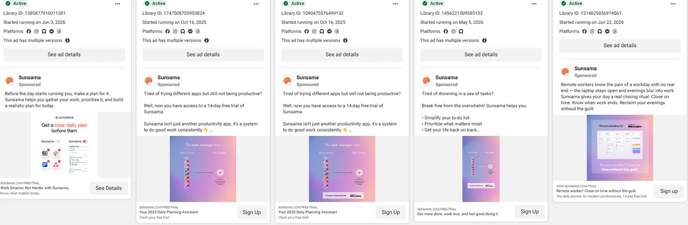
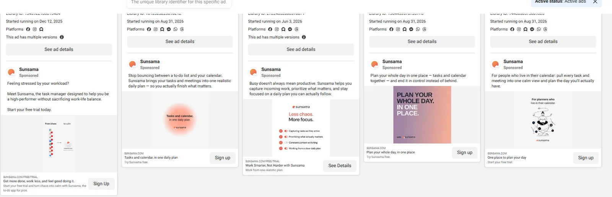
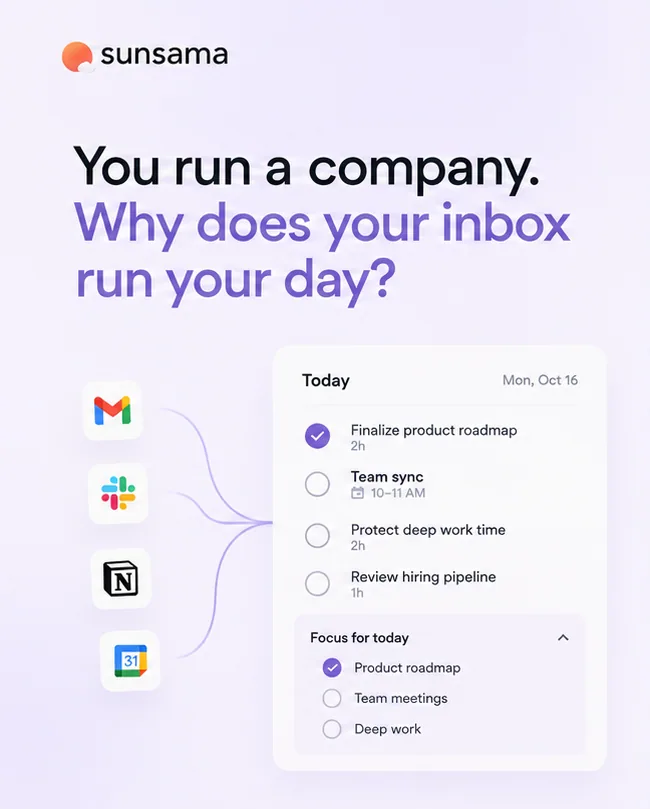
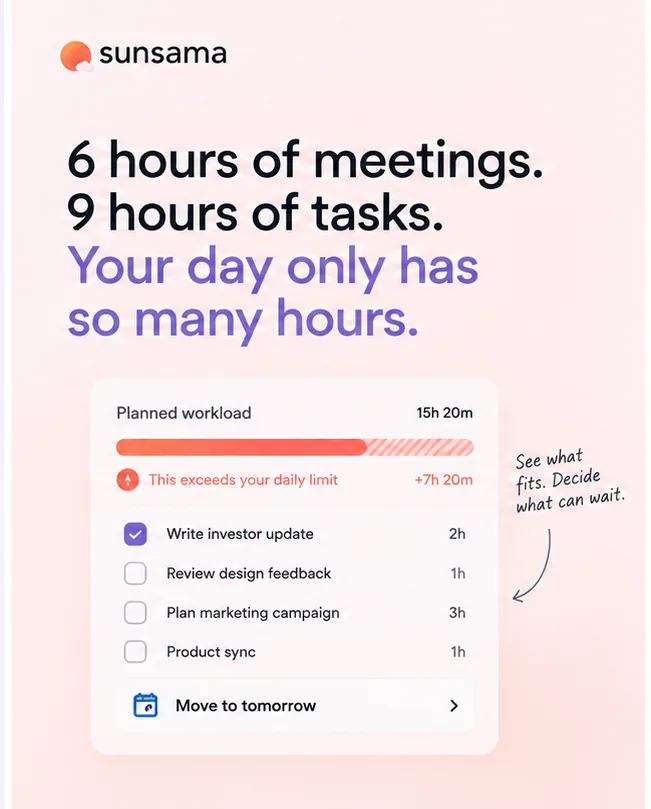
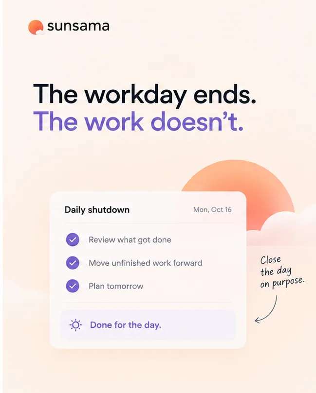
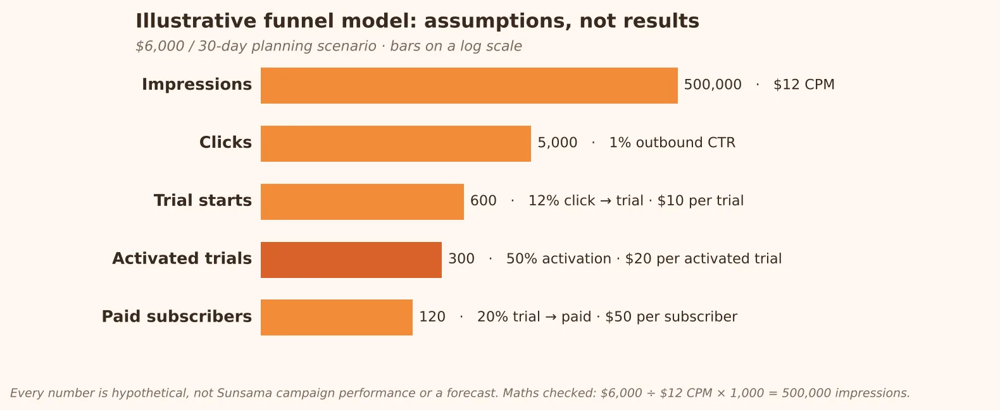

Project status. An independent speculative concept for my portfolio. It wasn't commissioned, approved or run by Sunsama; no ads were launched and no budget was spent. I've written it the way I'd pitch it from inside Sunsama's growth team: that's a voice, not a claim to work there.
Process note. AI tools supported parts of the research and drafting. The strategic framing, creative direction and final decisions are mine.
- Business objective
- Acquire paid subscribers through the 14-day free trial
- Primary KPI
- Cost per paid subscriber, read alongside trial-to-paid conversion and early retention
- Leading quality KPI
- Cost per activated trial; proposed activation = at least 3 daily plans in the first 7 days
- Campaign
- Done for the Day: make realistic capacity and a deliberate finish line the story
01Not another place to store tasks
Sunsama is selling a more intentional relationship with work: plan around the hours you actually have, decide what matters, and end the day on purpose.
So the moment I'd dramatise is the one just before that finish line. The task list is longer than the day, and something has to give. My lead concept, The Math, makes that mismatch impossible to ignore. The product demo doesn't pretend the hours fit. It shows the user prioritising and deferring work, making the trade-off instead of hoping for a miracle. Then the ad ends on the shutdown ritual.
“Done for the Day” isn't new whitespace: Sunsama already talks about shutdown rituals. My idea is to show the decision that makes shutdown possible.
02What Sunsama sells
Daily planning
Collect work, prioritise, and plan against available time.
One view
Pull work from Gmail, Slack, Notion, Trello and Asana into one daily plan.
Shutdown ritual
Review the day, prepare for tomorrow, and signal that work is finished.
| Commercial fact | Creative implication |
|---|---|
| 14-day trial; no card required | A low-friction CTA, but trial starts alone don't prove value |
| $22 monthly / $204 annual upfront | The ad has to demonstrate a useful behaviour, not just claim productivity |
A free calendar shows appointments. A task list stores work. Neither resolves the tension between the hours available and the obligations coming in.
03Busy all day, still behind
Meetings break up focus. Slack resets priorities every hour. The work you meant to do slides into the evening.
| Symptom | Underlying tension | Creative opportunity |
|---|---|---|
| A full calendar plus an even longer list | The plan assumes more capacity than exists | Show the math before showing the product |
| Reactive work crowds out priorities | Urgency replaces intention | Make the user choose what matters today |
| Work continues after the laptop closes | There's no psychological finish line | Make shutdown the recurring end frame |
Evidence and caveat: Sunsama's 2025 State of Modern Work and Well-being report describes fragmented focus and workload overwhelm. It's brand-published research with Sunsama customers, so it's directional, not representative.
04Audience: meet Daniel, 36
Founders and people managers at small US teams: high responsibility, fragmented work, and a constant tug-of-war between meetings and focused work.
His day
Co-founder of a 12-person software company. Meetings until mid-afternoon; tasks across Slack, Linear, email and a notebook. Focused work spills into the evening. Illustrative composite.
His tension
Data-driven about the business, oddly vague about his own time. Guilty logging off with things undone, guiltier when work eats family evenings.
His objection
“I already have a calendar and a task manager. Why pay for another tool?”
Motivations to test
- Control: I want to choose the day's priorities instead of reacting.
- Relief: I want to finish work with a clear plan for what remains.
- Practical proof: I need to see how the product changes my planning.
05Same territory, different sequence
| Brand | Observed lead | Implication |
|---|---|---|
| Motion | AI scheduling, auto-rescheduling, protecting deep work | Automation is a loud category cue |
| Akiflow | Unified inbox, calendar, time blocking | Control and speed are loud cues too |
| Sunsama | Intentional planning, realistic workload, shutdown rituals | Already owns the finish line; dramatise the decision before it |



What the audit tells me: our edge isn't the territory, it's the sequence. Expose the mismatch, make the trade-off, then earn the shutdown.
06Run the company. Don't let the day run you.
- Audience
- Founders and managers: high responsibility, fragmented work
- Lead angle
- Workload math: concrete and far less interchangeable than “feel productive”
- Emotional payoff
- Shutdown: the feeling of finishing deliberately
- Proof style
- Product demo, answering “another task manager?”
Creative rules
- Show the product doing the work in every ad.
- Speak like a founder: meetings, priorities, the team.
- Aspirational, not smug. The person is busy, not perfect.
- Label every illustrative number and concept UI.
07Three reasons founders might care
Ad drafts made with generative AI for visualisation; UI is illustrative.

The Founder's Day
Founder identity & control · Cold → trial
- On image
- You run a company. Why does your inbox run your day?
- Primary text
- The best leaders don't work longer. They decide what today is for. Sunsama brings your calendar and tasks into one plan you can actually finish.
- Headline
- End the day on purpose
- CTA
- Start free trial
Tests whether a founder-identity hook beats a feature-led message.

The Math · lead hypothesis
Practical problem-solving · Cold → trial
- On image
- 6 hours of meetings. 9 hours of tasks. Your day only has so many hours.
- Primary text
- Most to-do lists pretend you have unlimited hours. Sunsama helps you see what fits, decide what can wait, and plan a day that doesn't spill into your evening.
- Headline
- Plan a day that actually fits
- CTA
- Start free trial
Makes the contradiction tangible. Numbers are illustrative, not customer data.

The Finish Line
Emotional relief & closure · Cold → trial
- On image
- The workday ends. The work doesn't.
- Primary text
- When you run a company, there's always something left to do. Sunsama helps you plan your priorities, prepare for tomorrow, and close the day on purpose.
- Headline
- Close the day on purpose
- CTA
- Start free trial
Builds on Sunsama's closure messaging; ends the visual on the “Done for the day” state.
0830-day testing plan
One question: which founder problem framing attracts trial users who go on to form a daily planning habit?
| Days | Work | Output |
|---|---|---|
| 1–4 | Finalise concepts, capture accurate UI, QA tracking | Three launch-ready statics |
| 5–11 | Test all three under identical conditions | Early hook and trial-start signals. No winner yet |
| 12–18 | Review trial quality and activation | Do cheap trials become repeat planners? |
| 19–24 | Iterate the strongest concept, one variable at a time | A controlled iteration |
| 25–30 | Shift spend cautiously toward the best activated-trial economics | What's supported, what's directional, what needs more data |
What I expect: The Math wins attention and the cleanest trials, The Finish Line pulls fewer clicks but stickier planners, The Founder's Day lands in between. I'd be delighted to be proven wrong. That's what the test is for.
09Follow the habit, not the click

Illustrative funnel model. Every number is hypothetical: not Sunsama performance and not a forecast.
| Signal | What it might mean | What I'd do next |
|---|---|---|
| High CTR, few trial starts | Curiosity hook, slow page or message mismatch | Check load speed, promise continuity and tracking first |
| Cheap trials, weak activation | Interest, not need; or unclear onboarding | Optimise to activation, not cheap signups |
| Good activation, weak paid | Not enough ongoing value, or plan fit is wrong | Inspect onboarding, objections and pricing-page behaviour |
| One creative wins CTR but loses on activated-trial cost | Attention isn't turning into qualified use | Trust the quality metric; CTR is a diagnostic, not the verdict |
10My recommendation
The biggest risk isn't a weak ad. It's a polished ad that promises a calmer life than one trial can deliver. Test all three: The Founder's Day (I want control back), The Math (I need a plan that fits) and The Finish Line (I want to stop at a time I choose). The Math is my lead.
References
- Sunsama: State of Modern Work and Well-being Report 2025 (brand-published, directional)
- Sunsama: About, Billing overview, Daily planning guide, Daily Shutdown changelog, features page
- SARAL customer story: Sunsama (vendor-published)
- Motion: AI Calendar · Akiflow: Time Blocking 101
- Meta Ad Library: Sunsama ad screenshots, October 2026